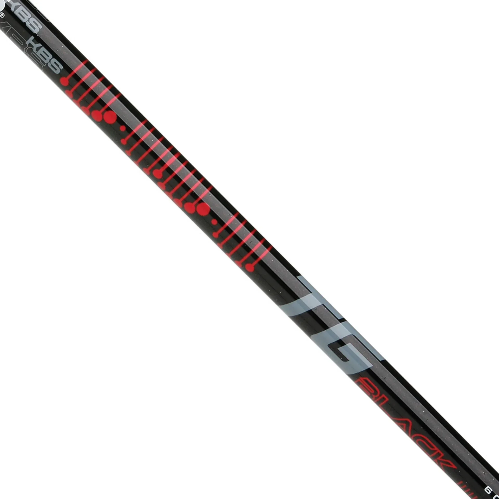

KBS has unveiled what it believes is a significant step forward in driver shaft performance with the launch of the new TGBlack. This marks KBS's expansion beyond their legendary iron shafts into the driver and wood shaft market.
From Iron Specialist to Complete Lineup
For years, KBS has been the gold standard for steel iron shafts, with the Tour 120, C-Taper, and TGI lines. The TGBlack represents the company's first serious entry into the driver shaft market, bringing their signature feel and performance to the long game.
"We've taken the same engineering principles that made our iron shafts successful and applied them to driver design," said Kim Braly, KBS founder. "The result is a shaft that provides the stability and consistency KBS players expect, now in a driver configuration."

Technology and Design
The TGBlack features KBS's advanced graphite technology, combining multiple material layers for optimal performance. The shaft is designed to provide a mid-launch, mid-spin profile that appeals to a wide range of players.
Key features include:
- Advanced graphite construction
- Mid-launch, mid-spin profile
- Weight options from 50-70 grams
- Multiple flex options
Availability
The KBS TGBlack is available now through authorized KBS dealers and fitters worldwide.